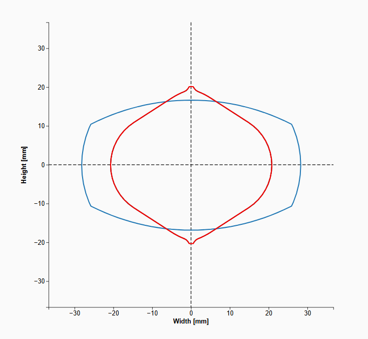
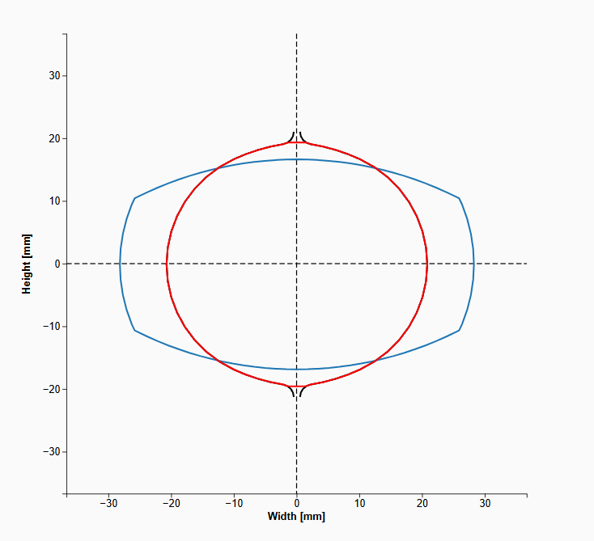
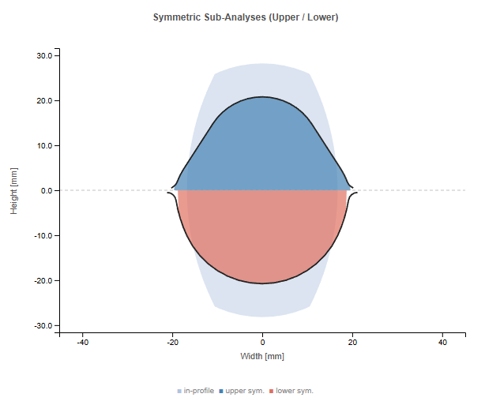
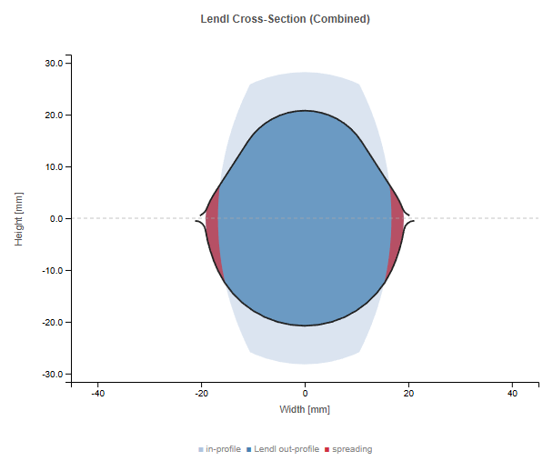
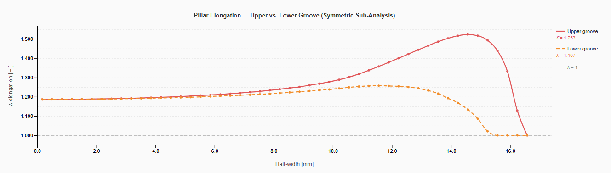
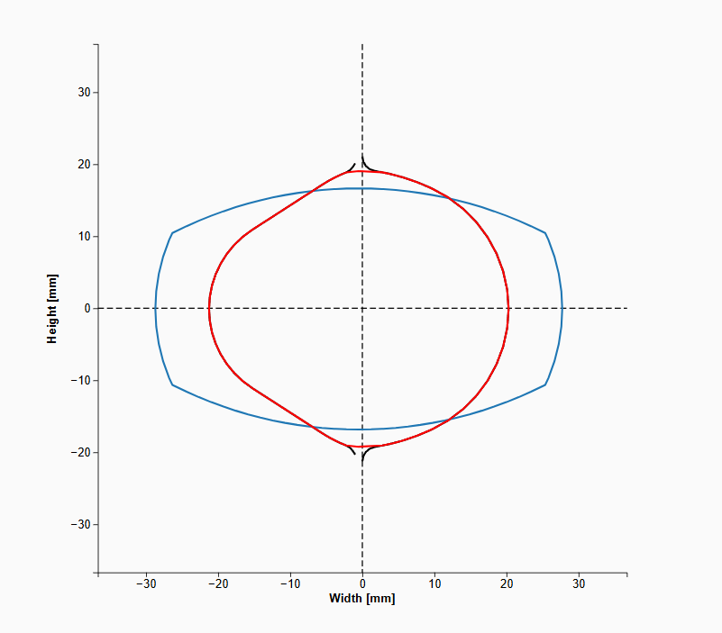
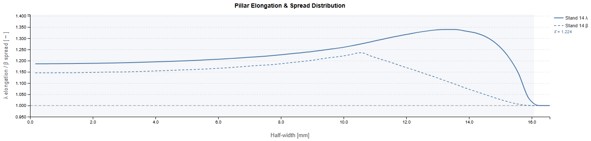
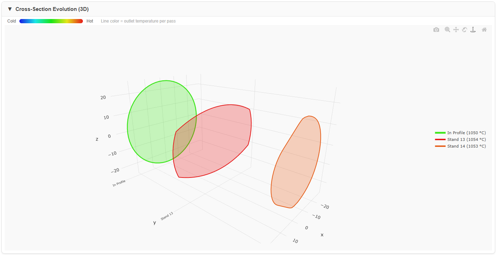

PyRoll GUI | Date: May 2026
An Asymmetric Roll Pass (AsymmetricRollPass) uses two rolls with different groove geometries (upper and lower). A typical example is the asymmetric entry pass of a rolling line where one side has a shaped groove (e.g. SplineGroove) and the other side is flat (FlatGroove). The asymmetry produces an unsymmetric cross-section and an offset neutral axis.
PyRolL Core does not natively support asymmetric roll passes. The PyRoll GUI implements a dedicated simulation strategy for this case, described in the following sections.
The asymmetric pass is decomposed into two independent symmetric TwoRollPasses:
Both sub-passes share the same gap, nominal roll radius, velocity and inlet profile.
Each is solved independently by the PyRolL simulation kernel. The sub-passes are
shown as separate entries in the results table
(flagged internally as is_sub_pass: true) for transparency.


All scalar process parameters for the combined AsymmetricRollPass result are computed as the arithmetic mean of the two sub-passes:
| Quantity | Symbol | Source |
|---|---|---|
| Roll force | \(F\) | avg(upper, lower) |
| Roll torque | \(M\) | avg(upper, lower) |
| Power | \(P\) | avg(upper, lower) |
| Exit velocity | \(v\) | avg(upper, lower) |
| Working radius | \(r_w\) | avg(upper, lower) |
| Roll RPM | \(n\) | avg(upper, lower) |
| Bite angle | \(\alpha\) | avg(upper, lower) |
| Exit temperature | \(T_{out}\) | avg(upper, lower) |
| Core temperature | \(T_{core}\) | avg(upper, lower) |
| Surface temperature | \(T_{surf}\) | avg(upper, lower) |
| Exit strain | \(\varepsilon\) | avg(upper, lower) |
| Flow stress | \(k_f\) | avg(upper, lower) |
| Filling ratio | \(\varphi_{fill}\) | avg(upper, lower) |
The individual per-roll values (force_upper, force_lower, torque_upper, torque_lower, velocity_upper, velocity_lower, etc.) are also stored and can be displayed in the results table for detailed inspection.
The averaged scalars cannot describe the shape of the asymmetric exit cross-section. For this, the Lendl pillar method is used.
pyroll-pillar-model plugin.
The inlet cross-section is discretised into \(N = 50\) vertical pillars of equal width \(\Delta x\) spanning the half-width of the profile. Each pillar \(i\) has:
The inlet height of each pillar is read from the cross-section polygon by intersecting a vertical line at \(x_i\) with the profile boundary.
The gap height between the upper and lower roll contour at pillar position \(x_i\) is computed from the groove contour lines. Pillars are flagged as in contact if their inlet height exceeds the local roll gap height.
The lateral spread of each pillar is computed according to Pawelski (2000), using the equivalent width-to-height ratio of the entire cross-section to select the coefficient set:
where \(\Delta h_i\) is the draught of pillar \(i\), \(l_{c,i}\) is its contact length, and \(h_{eq}\), \(w_{eq}\) are the equivalent height and width of the inlet cross-section. The coefficients \(b_1 \ldots b_4\) depend on the width-to-height ratio:
| Ratio \(w/h\) | \(b_1\) | \(b_2\) | \(b_3\) | \(b_4\) |
|---|---|---|---|---|
| \(w/h < 1\) | 1.240 | 1.626 | 0.788 | −0.056 |
| \(w/h = 1\) | 0.312 | 0.866 | 0.892 | 19.946 |
| \(w/h > 1\) | 0.496 | 1.025 | 1.142 | 1.166 |
where \(r_u\), \(r_l\) are the local roll radii derived from the nominal radius and pillar draught.
The output pillar widths are \(w_{\text{out},i} = w_{\text{in},i} \cdot \lambda_{\text{spread},i}\). The output cross-section polygon is built by:
The resulting polygon represents the asymmetric exit cross-section in the pass coordinate frame (x = spread direction, y = closing direction).
In addition to the combined asymmetric analysis, two symmetric sub-analyses are run with the same Lendl method:
These are hypothetical analyses (the gap geometry differs from the true asymmetric pass) that isolate the contribution of each groove to the spreading behaviour. Their output cross-sections and per-pillar spreading/elongation curves are shown in the Pillar-Fill Plot and Pillar-Chart for qualitative comparison.



The AsymmetricRollPass is typically used as a vertical pass
(rolls arranged horizontally, closing direction = horizontal = x-axis in world frame).
An _orientation_delta value (in degrees) tracks the total rotation
applied to the inlet profile relative to the global horizontal frame.
| Frame | x-axis | y-axis |
|---|---|---|
| Pass frame | Spread direction (pillar positions) | Closing direction (groove depth) |
| World frame (horizontal pass) | Width (spread) | Height (closing) |
| World frame (vertical pass, δ = 90°) | Height (closing) | Width (spread) |
| Field | Frame | Used by |
|---|---|---|
out_profile_contour | Pass frame rotated +δ (technological display) | OutProfilePlot, Roll Pass Result Plot |
out_profile_cross_section_coords | World frame (rotated −δ) | Next sequence in_profile, 3D Evolution Plot |
pillar_data.* | Pass frame (unrotated) | PillarFillPlot, PillarChart |
The main result entry (type = AsymmetricRollPass) contains:
The two symmetric sub-pass results (is_sub_pass: true) are stored as
separate entries in the pass list and contain the full PyRolL output for each
symmetric simulation (geometry, temperatures, force, torque, contours, ring
temperatures). They are used for the Roll Pass Visualization of each sub-pass.

Shown in the Pass Design tab. Displays the upper and lower groove contour lines with the inlet and outlet profile overlaid. For an AsymmetricRollPass the upper and lower roll contours differ visibly.
Shows the combined result: roll contours (black), inlet profile (blue) and exit profile (red) in the technological display frame. The asymmetric exit shape produced by the Lendl analyser is clearly visible — one side follows the shaped groove, the other side is flatter or differently contoured.
Two panels side by side:
Per-pillar charts showing:
Pillars not in contact (draught = 0) have \(\lambda_{spread} = 1\) and \(\lambda_{elong} = 1\). The asymmetry between upper and lower groove is reflected in the different spreading profiles of the two sub-analyses.

Shows the Lendl exit cross-section after the last pass of each sequence. For a sequence following an AsymmetricRollPass, the profile is automatically x-mirrored in the display to match the technological orientation convention (curved side on the left).
Displays the cross-section evolution along the pass sequence in 3D. For the AsymmetricRollPass the x-coordinates of the displayed cross-section are negated (mirror in x) so that the curved side appears consistently on the left in all sequences. The raw Lendl geometry is stored in world frame; the 3D plot applies this mirror internally.

When an AsymmetricRollPass is the last pass of a sequence, its exit cross-section
(out_profile_cross_section_coords) is automatically carried forward
as the inlet profile for the next sequence. The coordinate transformation applied:
out_profile_cross_section_coords and fed to the next
sequence via helpers.create_initial_profile().
In the next sequence all pass result plots apply an automatic
x-mirror correction (display_mirror_x = true) so
that 2D contour displays show the correct left/right orientation.
Michael Molter | PyRoll GUI – AsymmetricRollPass Method Documentation